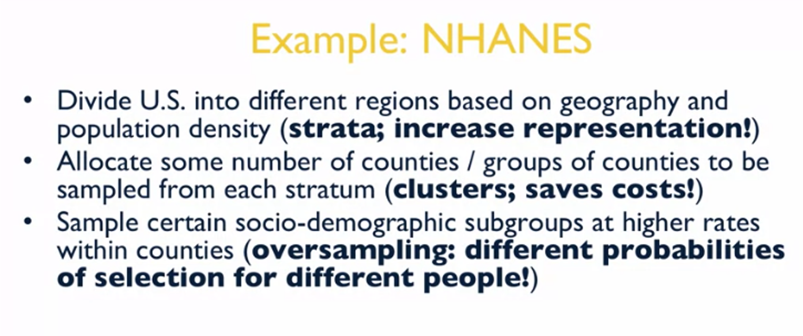
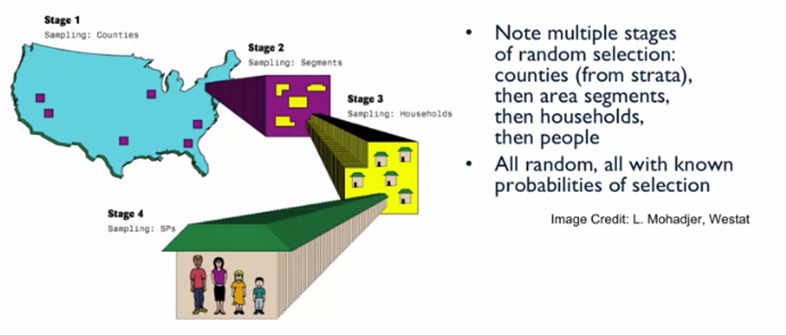

2 Lecture notes
A great resource that you can explore is the This is Statistics website, created by the American Statistical Association. This insightful and motivating campaign has countless links, videos, and resources to raise awareness of the wide variety of fascinating careers within statistics.
2.1 Definitions
The mean (average) of a data set is found by adding all numbers in the data set and then dividing by the number of values in the set. Its highly affected by outliers.
The median is the middle value when a data set is ordered from least to greatest.
The mode is the number that occurs most often in a data set.
I.i.d. data = Independent and identically distributed data. Here each random variable has the same probability distribution as the others and all are mutually independent
Range: the difference between the highest and lowest values.
Interquartile range: the range of the middle half of a distribution. Q3-Q3
Standard deviation: average distance from the mean.
2.2 Standard Score (Empirical Rule)
In statistics, the standard score is the number of standard deviations by which the value of a raw score (i.e., an observed value or data point) is above or below the mean value of what is being observed or measured.
It is calculated by subtracting the population mean from an individual raw score and then dividing the difference by the population standard deviation.
Standard scores are most commonly called z-scores.
A bell-shaped or normal distributions is sometimes referred to as the 68-95-99.7 rule: 68% of the observations are within 1 standard deviation of the mean. 95% of the observations are within 2 standard deviation of the mean. 99.7% of the observations are within 3 standard deviation of the mean.

2.3 Multivariate data
Univariate statistics summarize only one variable at a time. Bivariate statistics compare two variables. Multivariate statistics compare more than two variables.
A mosaic plot is a special type of stacked bar chart that shows percentages of data in groups. The plot is a graphical representation of a contingency table. These plots are a way to display qualitative multivariate data.
2.3.1 Scatter plots
Scatter plots are a good way to display multivariate quantitative data
Looking at association in scatter plots:
- Linear: The pattern in a plot is a line
- Quadratic association: The pattern is parabolic, i.e. the pattern goes up at the beginning and goes back down latter
- No association: there is no pattern
Looking at the direction of the association:
- Positive linear association: the pattern has a positive slope, i.e. when x increases, y decreases
- Negative linear association
Looking at the strength of the association:
- Weak linear association: the points are largely scattered along the line
- Moderate linear association: Partial scattering of points
- Strong linear association: Points are minimally scattered
Quantify the strength and direction via correlation:
Pearson correlation (R or p): number between -1 and 1 that indicates the strength and direction of association between two variables. The sign of the correlation indicates the direction, i.e. negative –> negative linear association. The closer the number is to 1 or -1 the stronger the association is.
One caveat with correlations: Correlation does NOT imply causation. I.e. age might not be the reason to why blood pressure is increasing even though we might see a positive correlation.
2.3.2 Outliers
Outliers are extreme data points that deviate from patterns observed in the rest of the data.
2.4 Simpson’s Paradox
A confounding variable is an outside influence that changes the relationship between the independent and the dependent variable (ie. a third variable in a study examining a potential cause-and-effect relationship). It oftentimes works by affecting the causal relationship between the primary independent variable and the dependent variable. This confounding variable confuses the relationship between two other variables; it may act by hiding, obscuring, or enhancing the existing relationship.
For example, suppose that you are interested in examining how activity level affects weight change. Other factors, like diet, age, and gender may also affect weight change and come into play when looking at the relationship between activity level and weight change. If one doesn’t control for these factors, the relationship between activity level and weight change can be distorted.
2.5 Populations and samples
2.5.1 Sampling from populations intro
How to make inferential statements about a population?
- Conduct a census, i.e. measure everyone in a population. So only doable for small populations and can get easily get expensive, so requires careful cost evaluation.
- Selected a probability sample from the population and measure all units in that sample. Here, we construct a list of all units in a population, i.e. a sampling frame and then we determine a probability of selection for every unit on that list. Then select units from that list at random where sampling rates for different subgroups are determined by the probabilities of selection. Finally, measure those randomly selected units.
- Select a non-probability sample from the population. This process doesn’t involve random selection of individuals, according to probability of selection, so there is no statistical basis for making inferences about the target population –> high potential for bias. Examples are opt-in web surveys, quota sampling, snowball sampling or convenience sampling.
Why probability sampling?
The known probabilities of selection for all units allow us to make unbiased statements about population features and the uncertainty in survey estimates. The random selection of units protects us against bias from the sample selection mechanisms –> allows us to make population inferences based on sampling distributions.
2.5.2 Simple random sampling (SRS)
- We start with a known list of N population units (N = size of the population) and randomly select n units from the list (n = the size of our sample)
- Every unit has equal probability of selection of \(n/N\)
- All possible samples of size n are equally likely
- Estimates of means, proportions and totals based on SRS are unbiased (i.e. equal to the population averages on average)
- Can be with replacement or without replacement
- With replacement means that when we select somebody from a larger list, we’ve replaced them in that list. And we give them a chance of being selected again in the sample.
- More common is that simple random sampling is done without replacement. So once an individual unit is sampled from a given list, they can’t be sampled again.
- For both: The probability of selection for each unit is still \(n/N\)
- Rarely used in practice: Collecting data from n randomly sampled units in a large population can be expensive
- Example: We have 1000 email conversations and want to check 100 manually for some things, then we can design a random nr. generator to pull out a simple, random sample from our population of emails.
2.5.3 Working with complex samples
Key features of complex samples:
- Population is divided into different strata, and part of the sample is allocated to each stratum. This ensures the a sample representation from each stratum and reduces variance of survey estimates (this technique is known as stratification)
- Clusters of population units (e.g. counties) are randomly samples first (with a known probability) within strata, to save costs of data collection (i.e. we collect data from cases close to each other geographically for the county example)
- Units are randomly sampled from within clusters, according to some probability of selection, and measured
A unit’s probability of selection is determined by:
- The number of clusters sampled from each stratum
- The total number of clusters in the population of each stratum
- The number of units ultimately sampled from within each randomly selected cluster
- The total number of units in the population in each cluster
An example for finding a unit’s probability of selection:
- We want to select a out of A clusters at random in a given stratum
- Then we select b out of B units at random from within each selected cluster
- The probability of selection is: \((a/A)(b/B)\)

